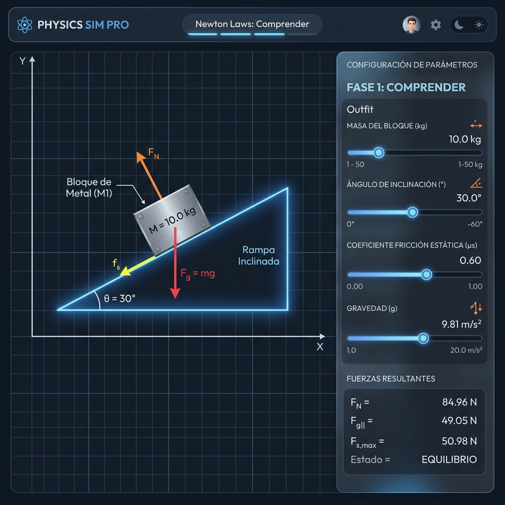
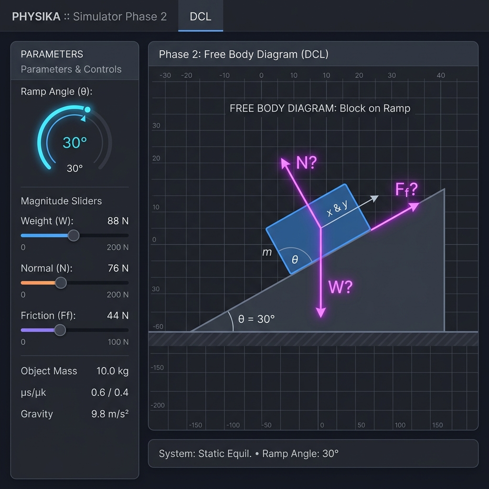
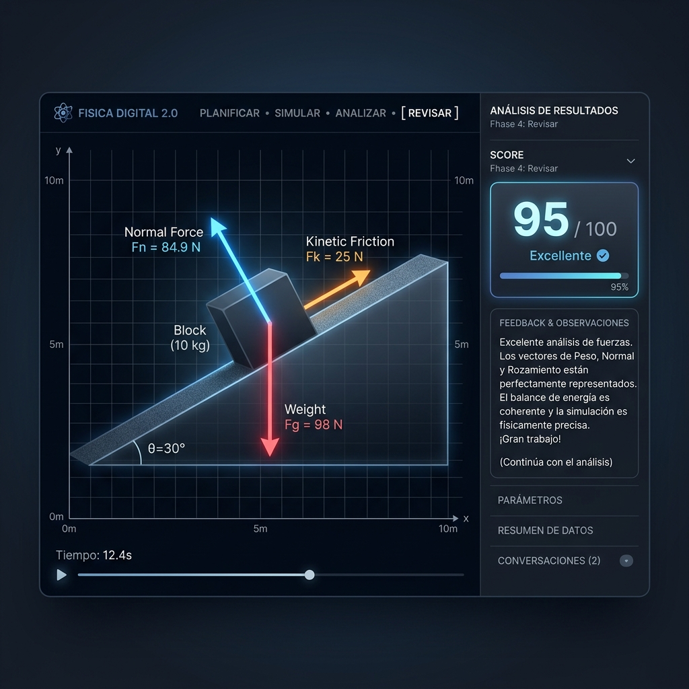

Bienvenido al **Laboratorio Virtual de Fuerzas**. Esta guía te apoyará en la comprensión y modelación de las fuerzas de la gravedad, contacto y rozamiento que interactúan sobre un bloque apoyado en una rampa. Estructuraremos tu razonamiento físico bajo las **fases heurísticas de resolución de problemas de George Pólya**, basadas en la investigación del **Profesor Marcos Chacón Castro**.
La dinámica estudia las causas del movimiento de los cuerpos basándose en las fuerzas aplicadas. En un plano inclinado a un ángulo $\theta$ con rozamiento, actúan tres fuerzas fundamentales sobre el bloque:
La atracción que ejerce la Tierra sobre el bloque de masa $m$. Apunta siempre de forma **vertical hacia el centro del planeta (hacia abajo, ángulo polar 270°)**:
Debido a la inclinación de la rampa, este vector se descompone en dos componentes ortogonales a los ejes de la rampa:
La reacción de la superficie de la rampa al ser presionada por el bloque. Apunta siempre de forma **perpendicular al plano inclinado hacia arriba (ángulo polar θ + 90°)**. Por equilibrio en el eje perpendicular:
La fuerza obstructiva generada por el contacto de las imperfecciones de las superficies. Se opone siempre al sentido de deslizamiento **(paralela a la rampa hacia arriba, ángulo polar θ)**:
Familiarízate con las variables de la rampa ($\theta$, masa $m$, coeficientes de rozamiento $\mu_s, \mu_k$).

Formula tu hipótesis de fuerzas. En esta fase debes **diseñar el Diagrama de Cuerpo Libre (DCL)** estimando las magnitudes y direcciones polares exactas en Newtons.

Inicia el experimento para observar si las fuerzas impuestas generan movimiento o equilibrio estático.
Evalúa tu precisión matemática. El Tutor Pólya confrontará tus ángulos y magnitudes del DCL de la Fase 2 contra las fuerzas reales analíticas.

El Tutor calculará la desviación angular y de magnitud, otorgándote una puntuación. Si cometiste un desvío (como apuntar el Peso en la dirección del plano), el Tutor te guiará para que identifiques el error de modelación vectorial y asimiles las leyes de Newton.